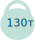

Синій кит
Найбільша тварина на Землі. Через свої розміри дорослі сині кити не мають природних ворогів. Ще до 20 ст були поширені майже у всіх океанах. Але через активне полювання до 1996 майже зникли. Страждають від зіткнень з великими суднами, а також від підвищенного шумового фону в океані, що ускладнює пошук партнерів.